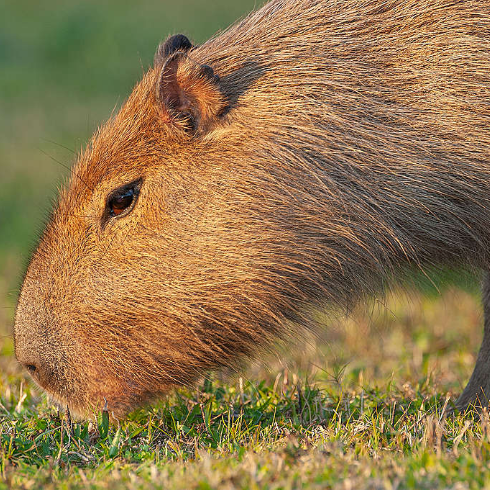
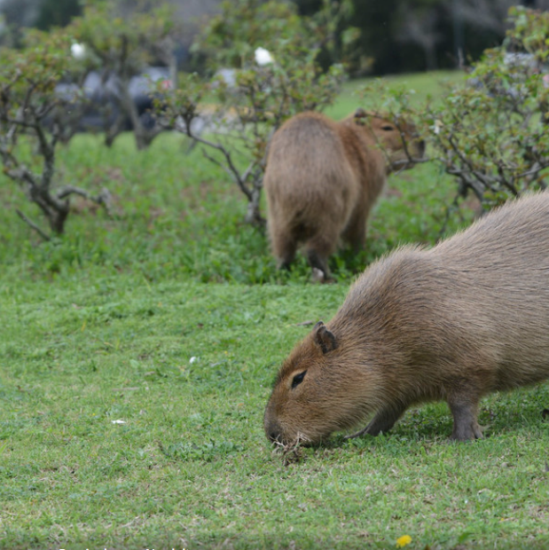
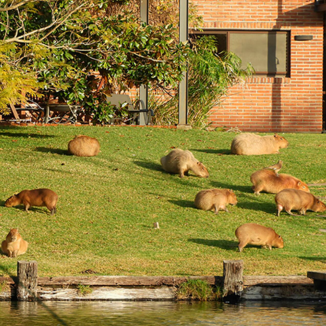
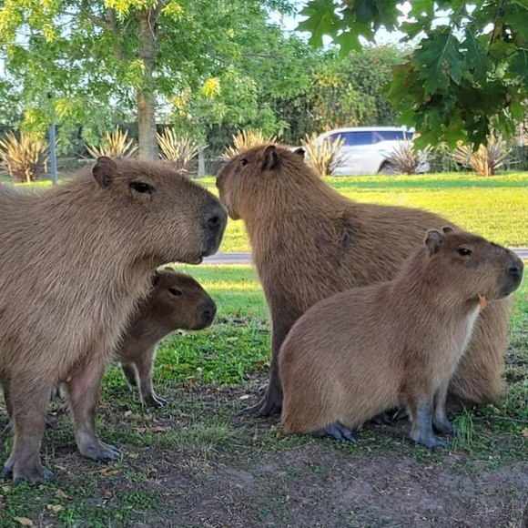
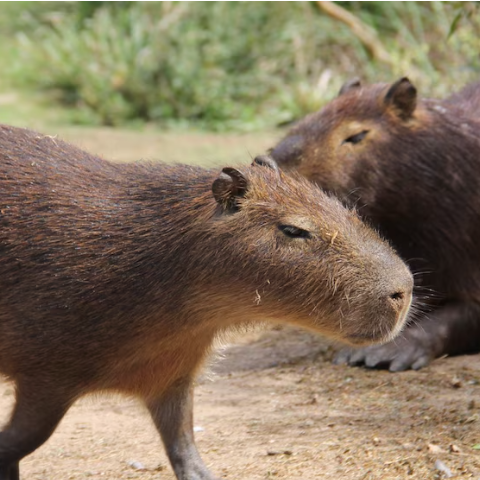

Nación Carpincho
DONDE LO UNICO QUE NOS IMPORTA, SON LOS CARPINCHOS
Algo de info sobre ellos
El carpinho un roedor herbívoro anfibio, cuyo adulto pesa alrededor de 55Kg, mide más de 1 metro de largo y 50 cm de altura. Es un animal robusto sin cola, con un aspecto semejante al de un cobayo gigante. Tiene el tronco macizo, la cabeza gruesa y pesada, el hocico es truncado y ancho. Los ojos son pequeños, las orejas poco desarrolladas y el labio superior muy hendido. Las patas tienen escasa longitud; las anteriores poseen cuatro dedos y las posteriores 3 dedos. Los dedos de ambas extremidades están unidos por una pequeña membrana natatoria. El pelaje es denso, corto y bastante áspero. La coloración general es gris castaño uniforme en todas partes.
En los últimos años el cuero de carpincho se comenzó a utilizar en la confección de prendas, si bien el cuero debe ser de carpinchos de criaderos, muchas veces la caza ilegal suma ejemplares a esta industria.
Habitat
El hábitat natural del carpincho son las sabanas, selvas y pastizales cercanos a cuerpos de agua dulce como ríos, lagos, arroyos y pantanos, en toda América del Sur desde Panamá hasta el norte de Argentina. Estos animales semiacuáticos dependen del agua para regular su temperatura corporal, refugio, protección y reproducción.
Los carpinchos viven en las provincias mesopotámicas de Misiones, Corrientes y Entre Ríos. También se los encuentra en zonas de esteros, bañados y a orilla de cursos de agua de la provincia de Formosa, Salta, Chaco y Santa Fe y Buenos Aires. En las islas del Río Paraná y en los Esteros del Iberá se encuentran importantes poblaciones de carpinchos.
Alimentacion
Son herbívoros y se alimentan de la vegetación que bordea las fuentes de agua y otras plantas acuáticas. Un carpincho adulto puede consumir de 2,7 a 3,6 kg de hierba fresca al día. También se alimentan de sus propias heces, que contienen bacterias beneficiosas que ayudan a su estómago a descomponer la fibra de la hierba. Durante la estación seca o en condiciones de sequía, los carpinchos también comen granos, melones, juncos y calabazas.
Depredadores
Los carpinchos se ven amenazados naturalmente por jaguares, caimanes y anacondas, y sus crías pueden ser capturadas por ocelotes y águilas . Sin embargo, su principal amenaza son los humanos: son cazados extensivamente por su carne y su piel, que puede utilizarse para fabricar cuero. En algunos países, se ha extendido la cría de carpinchos, lo que alivia parte de la presión sobre las poblaciones silvestres. Al igual que ocurre con todos los habitantes de la selva tropical, la deforestación también representa una amenaza.
Comportamiento
Actividad
Los carpinchos son animales principalmente crepusculares. Pasan el calor del día en agujeros en el barro o dentro de las aguas. Para dormir se esconden entre una vegetación espesa; no les hace falta ninguna cueva. En cambio, en las zonas donde son molestados por las actividades humanas, cambian y adoptan un estilo de vida nocturno. Si un carpincho advierte peligro, avisa a los demás con un ladrido corto, y de inmediato todos corren a fin de ponerse a salvo en el agua. Pueden bucear y permanecer bajo el agua hasta cinco minutos, y son capaces de nadar con todo el cuerpo sumergido excepto las orejas, los orificios nasales y los ojos.
Vida social
Viven en grupos, que pueden estar constituidos por una pareja y sus crías, o por un grupo más grande de ejemplares adultos. La medida de los grupos varía entre seis y veinte animales. En algunos casos raros también se puede observar ejemplares solitarios, casi siempre machos adultos. La medida de los grupos y su estilo de vida depende de la estación del año y del hábitat.
Durante la estación lluviosa, se extienden por una gran región, de manera que disminuye la medida del grupo. Durante esta estación se produe la cría de los recién nacidos. Durante la estación seca, muchos ejemplares se reúnen alrededor de los ríos y lagos más grandes, formando grupos más numerosos. Durante esta estación, la mortalidad es notablemente más alta, ya que aumenta el hambre y las enfermedades, y con la desaparición de las plantas que les sirven de protección son más vulnerables a los ataques de sus depredadores.
Cada grupo está liderado por un macho dominante, que normalmente ocupa esta posición durante muchos años. Después vienen una o diversas hembras con sus crías y los machos subordinados. La jerarquía suele ser estable y estar bien marcada tanto entre los machos como entre las hembras, y se establece por medio de combates.
Cada grupo habita en un territorio de entre 5 y 17 hectáreas, aunque los animales suelen permanecer dentro de una región de unas 10 hectáreas de superficie, que defienden contra las incursiones de otros ejemplares de la misma especie.
Se comunican entre ellos por medio de una variedad de vocalizaciones. Entre ellos hay un sonido parecido al ronroneo de los gatos, que indica sumisión, un grito de alarma parecido a un ladrido de perro, silbidos estridentes y gruñidos.
Reproducción
Cuando está en celo, el olor de la hembra cambia sutilmente y los machos cercanos comienzan a perseguirla.Además, la hembra alerta a los machos de que está en celo silbando por la nariz. Durante el apareamiento, la hembra tiene la elección de aparearse. Los carpinchos se aparean sólo en el agua, y si una hembra no quiere aparearse con un determinado macho, se sumerge o sale del agua. Los machos dominantes son muy protectores con las hembras, pero normalmente no pueden evitar que algunos de los subordinados copulen.
El apareamiento puede tener lugar en cualquier época del año, pero la mayoría de nacimientos suelen ser en la estación lluviosa. Generalmente, cada hembra pare una vez por año, pero si las condiciones climáticas son favorables pueden hacerlo dos veces. El periodo de gestación dura unos 110 días en la subespecie septentrional y unos 150 en la meridional. El ciclo de estro femenino ocurre cada 7.5 días; permanece receptiva solo durante 8 horas. Los carpinchos son multíparas, y cada parto se compone de una media de cuatro crías, pero puede variar entre una y ocho. El parto se produce en tierra y la hembra se reúne con el grupo a las pocas horas de dar a luz a los carpinchos recién nacidos, que se unen al grupo en cuanto son móviles. Al cabo de una semana, las crías pueden comer hierba, pero siguen mamando hasta que se destetan alrededor de las 16 semanas
Los carpinchos y Nordelta
Los carpinchos en Nordelta, sus causas y consecuencias.
Carpinchos en Nordelta: una jueza prohibió castraciones y frenó medidas para protegerlos
Trabajos en Nordelta para mejorar la convivencia con los carpinchos

Envenenamiento de crias de carpincho en Nordelta
Denuncia de maltrato tensiona un conflicto que lleva años y no para de crecer
Por qué los carpinchos viven en Nordelta y cómo buscan controlar la cantidad de ejemplares
Contactate con nosotros
Y ayuda a que los carpinchos no sean desalojados del lugar al que pertenecen